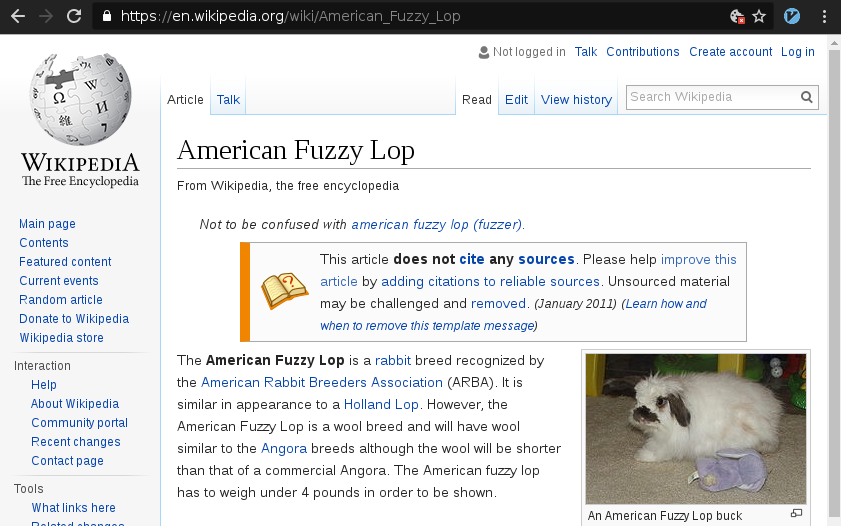
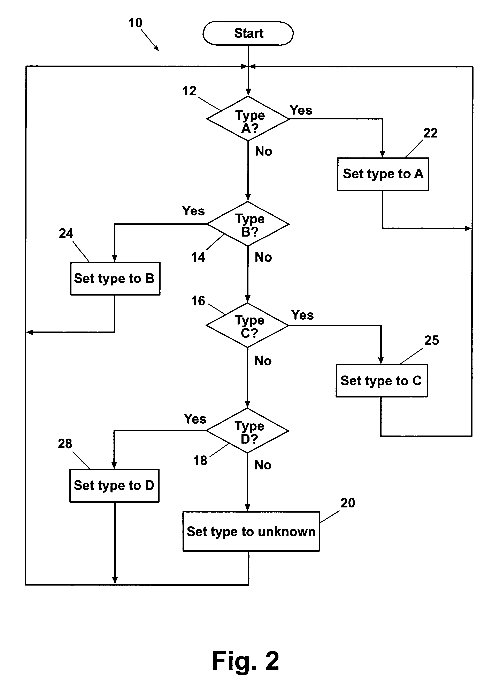
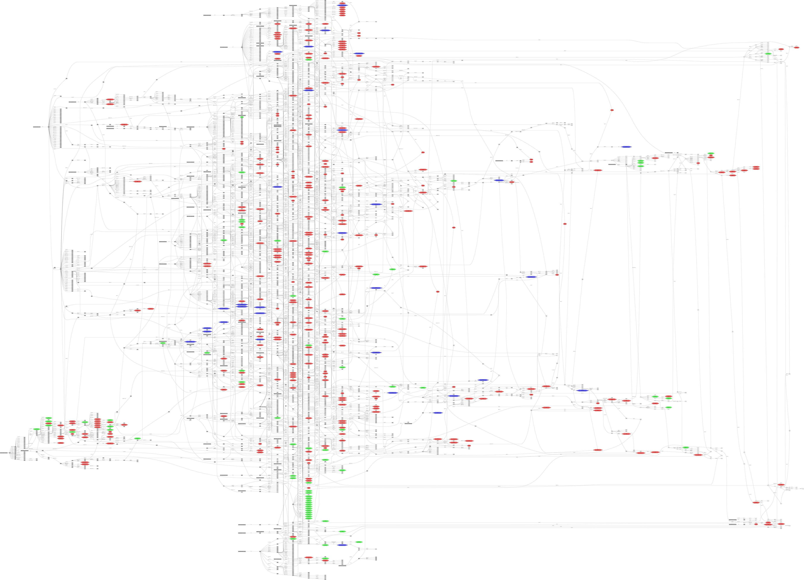
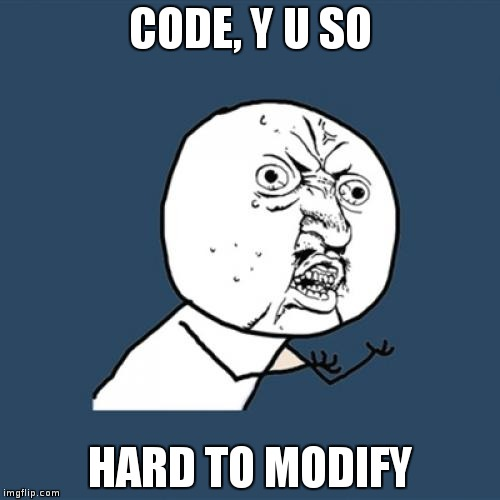
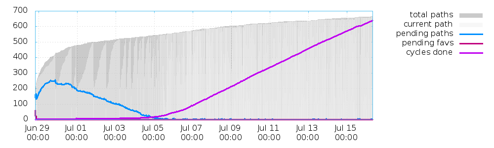
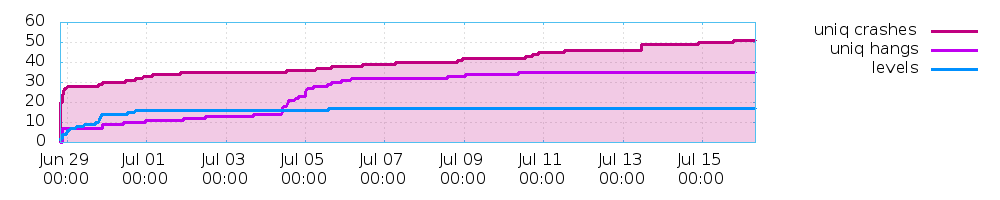
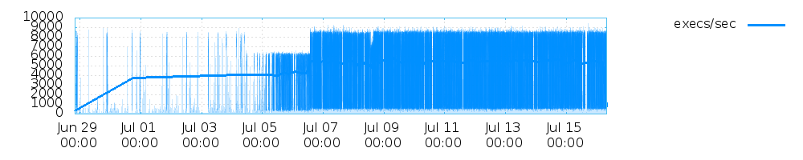
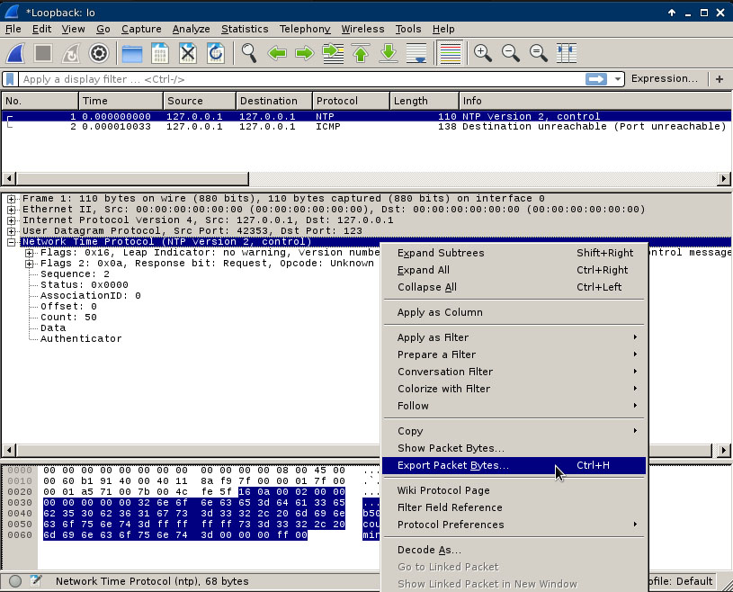
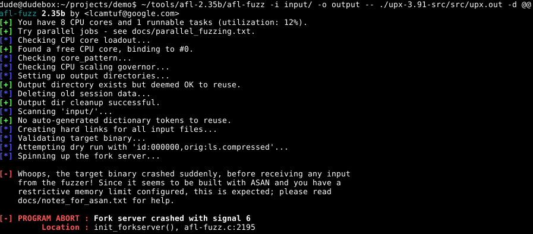
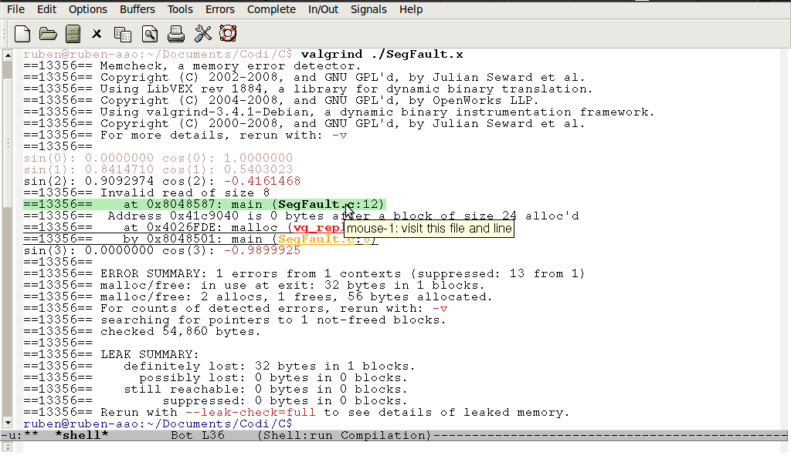

class: center, middle # AFL American Fuzzy Lop slides: http://dumpco.re/afl ---  --- # Agenda 1. Why care? 2. Why it's better 3. "hello world" setup 4. Why it's faster - fork server - deferred initialisation - persistent mode 5. How to fuzz a server 6. Error detection - libdislocator/valgrind/ASan/MSan/TSan/UBSan/KASan 7. measuring coverage with afl-cov 8. Compiler transformation for better coverage 8. beyond crashes: - authentication bypass - logic flaws - ~anything you want, fuzzing can find it 9. Targeting --- class: center, middle # Why care? http://lcamtuf.coredump.cx/afl/ --- class: center, middle # Why it's better ---  ---  --- # "Pulling JPEGs out of thin air" https://lcamtuf.blogspot.dk/2014/11/pulling-jpegs-out-of-thin-air.html --- class: center, middle # "Hello world" setup --- # "Hello world" setup ``` # CC=~/tools/afl-2.35b/afl-clang-fast \ CXX=~/tools/afl-2.35b/afl-clang-fast++ make clean all # ~/tools/afl-2.35b/afl-fuzz -i testcases/ \ -o output -- ./upx-3.91-src/src/upx.out -d @@ ``` --- class: center, middle # Demo --- <iframe src="upxfuzz.html" style="width: 110%; height: 110%" frameBorder="0"> --- dude@dudebox:~/projects/demo$ tree output/ ``` output/ ├── crashes │ ├── id:000000,sig:06,src:000000,op:flip1,pos:201 │ ├── id:000001,sig:06,src:000000,op:flip1,pos:205 │ ├── id:000002,sig:06,src:000000,op:flip1,pos:206 │ ├── id:000003,sig:06,src:000000,op:flip1,pos:206 │ ├── id:000004,sig:06,src:000000,op:flip1,pos:206 │ └── README.txt ├── fuzz_bitmap ├── fuzzer_stats ├── hangs ├── plot_data └── queue ├── id:000000,orig:ls.compressed ├── id:000001,src:000000,op:flip1,pos:0,+cov ├── id:000002,src:000000,op:flip1,pos:4 ├── id:000003,src:000000,op:flip1,pos:5,+cov ├── id:000004,src:000000,op:flip1,pos:6,+cov ... ├── id:000089,src:000000,op:flip1,pos:4101 ├── id:000090,src:000000,op:flip1,pos:4384 └── id:000091,src:000000,op:flip1,pos:4764 3 directories, 101 files ``` --- class: center, middle # Performance optimisations --- # Performance optimisations 1. Fork server 2. Deferred initialisation 3. Persistent mode --- # traditional fuzzing with execve() - How executables normally are started 1. read executable file from disk 2. parse executable file 3. init virtual memory 4. init stack 5. init heap 6. load shared libraries (.dll .so .dylib) 7. +++ 8. call main() --- # traditional fuzzing with execve() - How executables normally are started 1. read executable file from disk **<- couldn't care less** 2. parse executable file **<- couldn't care less** 3. init virtual memory **<- couldn't care less** 4. init stack **<- couldn't care less** 5. init heap **<- couldn't care less** 6. load shared libraries (.dll .so .dylib) **<- couldn't care less** 7. +++ **<- couldn't care less** 8. call main() ' --- --- class: center, middle # Fork server --- # Fork server 1. read executable file from disk 2. parse executable file 3. init virtual memory 4. init stack 5. init heap 6. load shared libraries (.dll .so .dylib) 7. +++ 8. call main() --- # Fork server 1. read executable file from disk 2. parse executable file 3. init virtual memory 4. init stack 5. init heap 6. load shared libraries (.dll .so .dylib) 7. +++ 8. **fork()** 9. call main() --- # Fork server 1. **fork()** 2. main() --- class: center, middle # works automatically! --- class: center, middle # But, we want more --- # Fork server 1. **fork()** 2. main() --- # Fork server 1. **fork()** 2. main() - parse cli args - readConfig() - initStuff() - check for updates - calculate more stuff - +++ - readInput() - parseInput() --- # Deferred initialisation 1. ~~fork()~~ 2. main() - parse cli args - readConfig() - initStuff() - check for updates - calculate more stuff - +++ - **fork()** - readInput() - parseInput() --- # Deferred initialisation 1. ~~fork()~~ 2. main() - parse cli args - readConfig() - initStuff() - check for updates - calculate more stuff - +++ - **fork()** - readInput() - parseInput() ``` #ifdef __AFL_HAVE_MANUAL_CONTROL __AFL_INIT(); #endif ``` ``` readInput() parseInput() ``` --- class: center, middle # But, we want MORE --- class: center, middle # Persistent mode --- # Deferred initialisation 1. **fork()** 2. readInput() 3. parseInput() --- # Persistent mode 1. ~~fork()~~ 2. readInput() 3. parseInput() --- # Persistent mode 1. ~~fork()~~ 2. readInput() 3. parseInput() ``` init() while (__AFL_LOOP(1000)) { readInput(); parseInput(); } exit(0); ``` --- class: center, middle # Server fuzzing --- # Server fuzzing ``` init(); while (keep_running) { waitForData(); // blocking readInput(); parseInput(); housekeeping(); } cleanup(); ``` --- # Server fuzzing ``` init(); //while (keep_running) { //waitForData(); // blocking //readInput(); readFromStdin(); (or) readFromFile(); parseInput(); exit(0); housekeeping(); //} cleanup(); ``` --- # Server fuzzing + deferred initialisation ``` init(); //while (keep_running) { //waitForData(); // blocking //readInput(); #ifdef __AFL_HAVE_MANUAL_CONTROL __AFL_INIT(); #endif readFromStdin(); (or) readFromFile(); parseInput(); exit(0); housekeeping(); //} cleanup(); ``` --- # Server fuzzing + persistent mode ``` init(); //while (keep_running) { while (__AFL_LOOP(1000) { //waitForData(); // blocking //readInput(); readFromStdin(); (or) readFromFile(); parseInput(); housekeeping(); } exit(0); cleanup(); ``` ---  --- # Lazy server fuzzing + persistent mode ``` init(); //while (keep_running) { while (__AFL_LOOP(1000) { input = readFromStdin(); (or) readFromFile(); sendToItself(input); waitForData(); // blocking readInput(); parseInput(); housekeeping(); } exit(0); cleanup(); ``` --- class: center, middle # Fuzzing ntpd network time protocol daemon --- # ntpd/ntpd.c ``` for (;;) { #if !defined(SIM) && defined(SIGDIE1) if (signalled) finish_safe(signo); #endif if (alarm_flag) { /* alarmed? */ was_alarmed = TRUE; alarm_flag = FALSE; } /* collect async name/addr results */ if (!was_alarmed) harvest_blocking_responses(); if (!was_alarmed && !has_full_recv_buffer()) { /* * Nothing to do. Wait for something. */ io_handler(); } ``` --- # ntpd/ntpd.c - modified ``` #define BUFLEN 5120 struct sockaddr_in si_other; int s, slen=sizeof(si_other); char buf[BUFLEN]; if ((s=socket(AF_INET, SOCK_DGRAM, IPPROTO_UDP))==-1) { perror("socket"); abort(); } memset((char *) &si_other, 0, sizeof(si_other)); si_other.sin_family = AF_INET; si_other.sin_addr.s_addr = inet_addr("127.0.0.1"); si_other.sin_port = htons(123); while (__AFL_LOOP(1000)) { ... if (!was_alarmed && !has_full_recv_buffer()) { memset(buf, 0, BUFLEN); size_t insize = read(0, buf, BUFLEN); if (sendto(s, buf, insize, 0, (struct sockaddr *)&si_other, slen)==-1) { perror("sendto()"); abort(); } io_handler(); } ``` --- class: center, middle # Demo --- <iframe src="b.html" style="width: 100%; height: 100%" frameBorder="0"> --- afl-plot <p> <p>  --- class: center, middle # Testcase generation --- # Testcase generation http://doc.ntp.org/4.1.0/ntpq.htm --- # Steal  --- ``` dude@dudebox:~/projects/ntpd/run/in$ ls -l | wc -l 43 dude@dudebox:~/projects/ntpd/run/in$ ls -l total 168 -rw-r--r-- 2 dude dude 68 Jun 18 11:57 decodenetnumtrigger1.raw -rw-r--r-- 2 dude dude 12 Jun 18 11:57 ntpassociations -rw-r--r-- 1 dude dude 36 Jun 18 11:57 ntpauth -rw-r--r-- 4 dude dude 12 Jun 18 11:57 ntpbeginningstrange -rw-r--r-- 2 dude dude 20 Jun 18 11:57 ntpclockvarassocid -rw-r--r-- 2 dude dude 24 Jun 18 11:57 ntpclockvarassocidset -rw-r--r-- 2 dude dude 24 Jun 18 11:57 ntpclockvarbadformat -rw-r--r-- 2 dude dude 24 Jun 18 11:57 ntpclockvarbadformatset -rw-r--r-- 2 dude dude 20 Jun 18 11:57 ntpclockvardevice -rw-r--r-- 2 dude dude 24 Jun 18 11:57 ntpclockvardeviceclock -rw-r--r-- 2 dude dude 24 Jun 18 11:57 ntpclockvardevicelocal -rw-r--r-- 2 dude dude 32 Jun 18 11:57 ntpclockvardeviceundisciplined -rw-r--r-- 2 dude dude 20 Jun 18 11:57 ntpclockvarflags -rw-r--r-- 7 dude dude 20 Jun 18 11:57 ntpclockvarflagsset -rw-r--r-- 8 dude dude 16 Jun 18 11:57 ntpclockvarpoll -rw-r--r-- 4 dude dude 20 Jun 18 11:57 ntpclockvarpollset -rw-r--r-- 7 dude dude 20 Jun 18 11:57 ntpclockvarstatus -rw-r--r-- 7 dude dude 20 Jun 18 11:57 ntpclockvartimecode -rw-r--r-- 2 dude dude 24 Jun 18 11:57 ntpclockvartimecodeset -rw-r--r-- 7 dude dude 104 Jun 18 11:57 ntpmonstats -rw-r--r-- 2 dude dude 52 Jun 18 11:57 ntpmrulist -rw-r--r-- 2 dude dude 68 Jun 18 11:57 ntpmrulistkod -rw-r--r-- 2 dude dude 72 Jun 18 11:57 ntpmrulistladdrset -rw-r--r-- 2 dude dude 68 Jun 18 11:57 ntpmrulistlimited -rw-r--r-- 2 dude dude 52 Jun 18 11:57 ntpmrulistmincount -rw-r--r-- 2 dude dude 68 Jun 18 11:57 ntpmrulistmincountset -rw-r--r-- 2 dude dude 68 Jun 18 11:57 ntpmrulistresallhexmask -rw-r--r-- 4 dude dude 68 Jun 18 11:57 ntpmrulistresanyhexmask -rw-r--r-- 2 dude dude 52 Jun 18 11:57 ntpmrulistsortorderaddr -rw-r--r-- 2 dude dude 52 Jun 18 11:57 ntpmrulistsortorderavgint -rw-r--r-- 2 dude dude 52 Jun 18 11:57 ntpmrulistsortordercount -rw-r--r-- 2 dude dude 52 Jun 18 11:57 ntpmrulistsortorderlstint -rw-r--r-- 2 dude dude 52 Jun 18 11:57 ntpmrulistsortorderlstintreverse -rw-r--r-- 4 dude dude 12 Jun 18 11:57 ntppeers -rw-r--r-- 4 dude dude 12 Jun 18 11:57 ntppeerschallengeresponse -rw-r--r-- 2 dude dude 16 Jun 18 11:57 ntpreadvarpeer -rw-r--r-- 2 dude dude 24 Jun 18 11:57 ntpreadvarprocessor -rw-r--r-- 4 dude dude 20 Jun 18 11:57 ntpreadvarstatus -rw-r--r-- 7 dude dude 20 Jun 18 11:57 ntpreadvaversion -rw-r--r-- 1 dude dude 44 Jun 18 11:57 ntpwritevarpeer -rw-r--r-- 1 dude dude 52 Jun 18 11:57 ntpwritevarrootdisp -rw-r--r-- 2 dude dude 48 Jun 18 11:57 raw ``` --- class: center, middle # Measuring coverage "What code did I actually fuzz?" --- # afl-cov - https://github.com/mrash/afl-cov - https://www.cipherdyne.org/fwknop/2.6.7-afl-lcov-results/ - https://www.cipherdyne.org/fwknop/2.6.7-afl-lcov-results/server/replay_cache.c.gcov.html --- class: center, middle # (more) Error detection --- # (more) Error detection - libdislocator - ASan - Address Sanitizer - libdislocator++ harder to use + insignificant slowdown - valgrind - ASan++, but HUGE slowdown - MSan - Memory Santizer - TSan - Thread Sanitizer - UBSan - Undefined Behavior Sanitizer - KASan - Kernel Address Sanitizer --- # (more) Error detection - **libdislocator** - **ASan** - Address Sanitizer - libdislocator++ harder to use + insignificant slowdown - valgrind - ASan++, but HUGE slowdown - MSan - Memory Santizer - TSan - Thread Sanitizer - UBSan - Undefined Behavior Sanitizer - KASan - Kernel Address Sanitizer --- # libdislocator Usage: AFL_LD_PRELOAD=/path/to/libdislocator.so ./afl-fuzz [...other params...] https://github.com/mcarpenter/afl/tree/master/libdislocator ``` 1) It allocates all buffers so that they are immediately adjacent to a subsequent PROT_NONE page, causing most off-by-one reads and writes to immediately segfault, 2) It adds a canary immediately below the allocated buffer, to catch writes to negative offsets (won't catch reads, though), 3) It sets the memory returned by malloc() to garbage values, improving the odds of crashing when the target accesses uninitialized data, 4) It sets freed memory to PROT_NONE and does not actually reuse it, causing most use-after-free bugs to segfault right away, 5) It forces all realloc() calls to return a new address - and sets PROT_NONE on the original block. This catches use-after-realloc bugs, 6) It checks for calloc() overflows and can cause soft or hard failures of alloc requests past a configurable memory limit (AFL_LD_LIMIT_MB, AFL_LD_HARD_LIMIT). Basically, it is inspired by some of the non-default options available for the OpenBSD allocator. It is meant as a more lightweight and hassle-free alternative to fuzzing with ASAN / MSAN (although it's obviously not as comprehensive). ``` --- class: center, middle # Address Sanitizer (ASan) = libdislocator + read checks + **more** ``` # AFL_USE_ASAN=1 ... ``` --- # ASan + 64-bit != </3  --- # docs/notes_for_asan.txt ``` 2) Long version --------------- ASAN allocates a huge region of virtual address space for bookkeeping purposes. Most of this is never actually accessed, so the OS never has to allocate any real pages of memory for the process, and the VM grabbed by ASAN is essentially "free" - but the mapping counts against the standard OS-enforced limit (RLIMIT_AS, aka ulimit -v). On our end, afl-fuzz tries to protect you from processes that go off-rails and start consuming all the available memory in a vain attempt to parse a malformed input file. This happens surprisingly often, so enforcing such a limit is important for almost any fuzzer: the alternative is for the kernel OOM handler to step in and start killing random processes to free up resources. Needless to say, that's not a very nice prospect to live with. ``` "On 64-bit systems, the situation is more murky, because the ASAN allocation is completely outlandish - around 17.5 TB in older versions, and closer to **20 TB** with newest ones." --- --- <iframe src="a.html" style="width: 100%; height: 100%" frameBorder="0"> --- # afl/experimental/asan_cgroups/limit_memory.sh 1. enable cgroups in kernel (grub boot options) 2. `# swapoff -a` ``` # sudo ./limit_memory.sh -u dude -m 500 -- ./afl-fuzz.. ``` --- # ASan <img style="width: 100%" src="asan.png"> --- # Valgrind  --- class: center, middle # Compiler transformation for more code coverage --- # Compiler transformation https://lafintel.wordpress.com/2016/08/15/circumventing-fuzzing-roadblocks-with-compiler-transformations/ --- class: center, middle # Beyond crashes --- # Beyond crashes ``` ABORT(3) Linux Programmer's Manual ABORT(3) NAME abort - cause abnormal process termination SYNOPSIS #include <stdlib.h> void abort(void); DESCRIPTION The abort() first unblocks the SIGABRT signal, and then raises that signal for the calling process. This results in the abnormal termination of the process unless the SIGABRT signal is caught and the signal handler does not return (see longjmp(3)). If the abort() function causes process termination, all open streams are closed and flushed. If the SIGABRT signal is ignored, or caught by a handler that returns, the abort() function will still terminate the process. It does this by restoring the default disposition for SIGABRT and then raising the signal for a second time. ``` --- # Authentication bypass ``` ... if (authenticated == true) { abort(); } ... ``` --- # Logic flaws ``` input = readInput(); resultA = libraryA_parse(input); resultB = libraryB_parse(input); if (resultA != resultB) { abort(); } ``` --- class: center, middle # Be creative! --- # Targeting - $$$ - curiosity - both?? --- # references - slides: http://dumpco.re/afl - http://imgur.com/a/O7z5F - strategies: https://lcamtuf.blogspot.dk/2014/08/binary-fuzzing-strategies-what-works.html - fuzz upx https://asciinema.org/a/e7bpjng8jj33o53qmctkihka8 - fuzz ntpd https://asciinema.org/a/1npswngnfah6m4m0et246e0lr